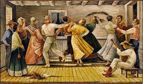
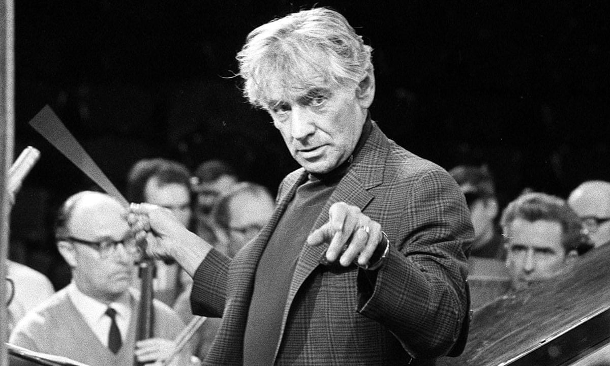
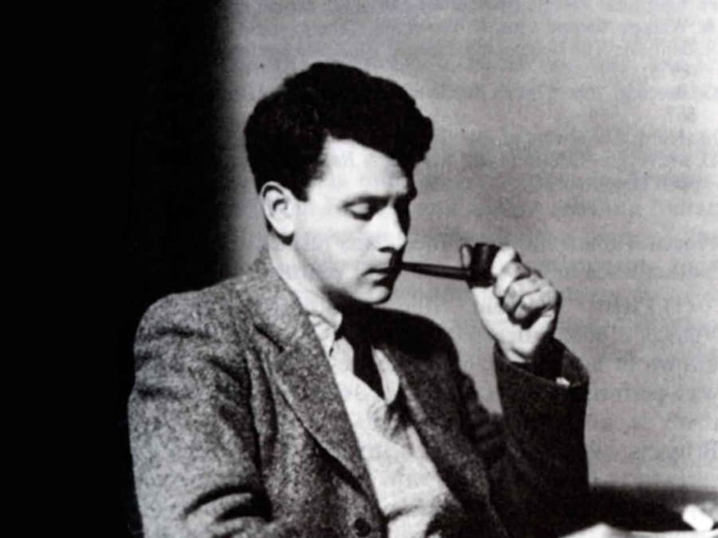

This is currently the final period of music where a lot changes. At the end of the Romantic period, “tonality” begins to offer few options for composers. Arnold Schoenberg develops a 12-tone composition method (serialism) that leads to a completely new form of music that is based on dissonance, and extremes of expression. Alongside this, the music of the Romantics continues, particularly in England with the works of Elgar, Finzi, and Holst.
The key composers in this era are: Schoenberg, Berg, Webern, Copland, Bernstein, Ives, Elgar, Finzi, Berio, STockhaussen, Debussy, etc.

 
EXAMPLE OF MUSIC
CLAUDE DEBUSSY: CLAIR DE LUNE
The title Clair de Lune means 'moonlight' in French. Fair enough- the piece does remind us of the moonlit night, but what is interesting is that the piece was originally called 'Promenade Sentimentale' meaning a 'sentimental walk'.
Anton Webern - Klavierstück (1925)
Anton Webern, in full Anton Friedrich Wilhelm von Webern, (born Dec. 3, 1883, Vienna, Austria—died Sept. 15, 1945, Mittersill, near Salzburg), Austrian composer of the 12-tone Viennese school. He is known especially for his passacaglia for orchestra, his chamber music, and various songs (Lieder).